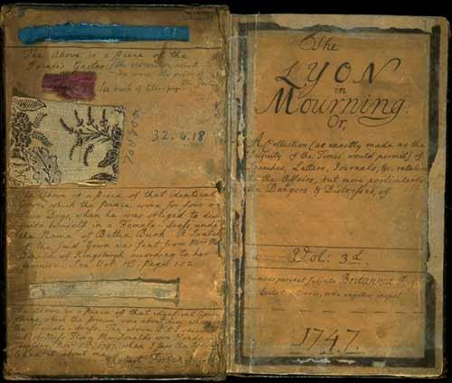
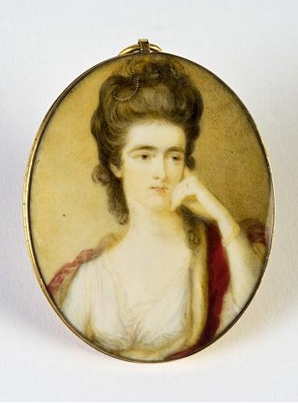

Louisa of Stolberg's Birthday
L'anniversaire de Louise de Stolberg
Born on 21st September 1752
by Bishop Forbes (?). To be found in his "Lyon in Mourning", vol. III, page 288, dated 21 Sept. 1773
and "The True Loyalist", page 10, 1779
Tune - Mélodie
In the "Lyon", there is a note, dated 21 October 1773: "Now set to music by John Addison , a native of Perthshire,
and to be dispatched to John Farquharson for the amiable fair, her favourable reception."
This tune was not found and is replaced here by "Robin John Clark"
from See Hogg's "Jacobite Relics" 1st vol. n° 74
|
To the lyrics
C.H. Firth states in his article "Jacobite Songs" in the Scottish historical review, 1911: "It is perhaps worth noting that 'The Birthday Ode ,' printed in 'The True Loyalists' (page 10, 1779), may also be found in The Lyon in Mourning vol. iii. p. 288, where it is headed ' By a friend meditating in bed betwixt 3 and 4 o'clock morning, Tuesday, September 21, the birthday of the Queen of Hearts , 1773.' At the end there is the following note : ' N.B. A copy of this was transmitted to John Farquharson of Aldberg [a gentleman who styled himself, after the song: "alias John Anderson, my Jo"], who, in return, said he would send it to the lovely pair.' An account of its reception is given on p. 317 of the same volume." "The Lyon in Mourning" is a collection of eight octavo volumes in manuscript each numbering more than 200 pages relative to the '45', composed at his own risk between 1747 and 1751 by Robert Forbes (1708 - 1775), an Episcopalian clergyman. In 1761 he started the ninth volume, followed by a 10th in 1775. This last remains unfinished, as on 18 November of the same year Forbes died in Leith. Important extracts from this collection were published under the title of "Jacobite Memoirs" by Dr. Robert Chamber in 1834, and the whole, in three volumes, by the Scottish History Society in 1895 (Editor, Henry Paton). The originals are in the Advocates' Library, Edinburgh. Why Forbes called his collection by this name it bears is nowhere explained. There is no doubt that it is an allusion to the woe of Scotland for her exiled race of princes,' the "Lyon" being the heraldic Rampant Lion representative of the nation. Forbes was a fervent Jacobite. He was prevented from taking active part in the rising, having been arrested at St Ninian, near Stirling, and confined in Stirling Castle and Edinburgh Castle during the military operations (Sept. 1745 till May 1746). After the Rising he resided at Leith and in 1762 was chosen Bishop of Ross and Caithness . He also was elected Bishop of Aberdeen, but this choice was disallowed by the college of Bishops. |
 Title page of the "Lyon in Mourning", Volume 3rd The strip of blue cloth is a piece of the Prince's garter The printed cloth "is a piece of that identical gown which the Prince wore for four or five days, when he was obliged to disguise himself in a female dress under the name of Bettie Burk ". Edward or Ned Burk from whom, recounts Forbes, Charles plucked the name of his female double was a cavalryman who came across the flying Prince after Culloden. From him Forbes obtained the well-told story of the escape from South Uist to Sky with Flora McDonald . |
A propos du texte
C.H. Firth écrit dans son article "Chants Jacobites" paru en 1911 dans la Revue historique écossaise: "Il convient de noter que le chant "Ode d'anniversaire" se trouve aussi dans le Lyon in Mourning , volume 3, p. 288, avec l'en-tête: "Composé par un ami, alors qu'il méditait au lit entre 3 et 4 heures du matin, mardi 21 septembre, anniversaire de la Reine de coeur , 1773." Il est suivi d'un post-scriptum: "Une copie a été transmise à John Farquharson d'Aldberg [un Jacobite qui signait "alias John Anderson, my Jo", comme dans la chanson] qui a répondu qu'il l'enverrait au charmant couple." Un récit de sa réception est donné page 317 du même volume." Le "Lyon in Mourning" (Le Deuil du "Lyon") est un ensemble de huit cahiers manuscrits in-8°, de plus de 200 pages chacun, relatifs au soulèvement de 1745 compilés, à ses risques et périls, par un prêtre Episcopalien, Robert Forbes (1708 - 1775), entre 1747 et 1751. En 1761 il commença le 9ème volume, suivi d'un 10ème en 1775. Celui-ci demeura inachevé du fait de la mort de son auteur survenue le 18 novembre de la même année à Leith. D'importants extraits furent publiés en 1834 sous le titre de "Mémoires Jacobites" par Robert Chambers, puis le tout, en 3 volumes, par la "Scottish History Society"", en 1895 (Chef de publication, Henry Paton). Les originaux sont conservés à l'"Advocates' Library" d'Edimbourg. Pourquoi Forbes a donné ce titre a son recueil, n'est expliqué nulle part. Il exprime très certainement la compassion de l'Ecosse pour sa dynastie princière exilée, le "lyon" étant le "lion rampant" héraldique représentant de la nation. Forbes était un fervent Jacobite, empêché de prendre part au soulèvement ayant été arrêté à St Ninian, près de Stirling, et enfermé aux châteaux de Stirling puis d'Edimbourg pendant le conflit (de sept. 1745 à mai 1746). Après la rébellion, il résida à Leith et en 1762 fut élu Evêque de Ross et Caithness . Il fut aussi élu évêque d'Aberdeen, mais ce choix fut désapprouvé par le collège des évêques. |

|
A BIRTH-DAY ODE
September 21st, 1773 1. Do thou, my soul, with steady patience wait, Till God unvail his firm resolves of Fate: Then C[harle]s shall reign, possess'd of ev'ry grace, And fair L[ouis]a [1] brighten ev'ry face And fair L[ouis]a brighten ev'ry face With rising branches of a royal race. [2] 2. Fly hence, despair! thou bane of happiness! Not cheating hope each faithful heart possess: Toss round the glass with joyous mirth and mein, And gladly sing, GOD save the King and Queen: [3] Bless them with children virtuous and fair [4]: May they be ever Heav'n's peculiar care. Source: "The True Loyalist or the Chevalier's Favourite", printed in the year 1779 |
 The "Queen of Hearts" |
ODE D'ANNIVERSAIRE
21 septembre 1773 1. Mon âme, patience! Tu peux le croire: Dieu va dévoiler l'arrêt du Destin: Charles règnera, tout paré de gloire Car la vue de Louise [1] réjouit chacun, Voyez pousser de nouvelles ramures: C'est l'arbre royal qui verdit enfin. [2] 2. Vas-t-en, désespoir, poison de naguère, Point de songes creux, amis, cette fois! Loyaux et gais, faites tinter vos verres, Chantant "Dieu sauve la Reine et le Roi!" [3] Qu'Il leur accorde une progéniture [4] Belle et vertueuse, objet de Ses soins. (Trad. Christian Souchon(c)2010) |
|
[1] In 1770 Prince Charles's ever-loyal adviser,
John Baptist Caryll
(1713-1788), became Jacobite Secretary of State, whose "greatest achievement was Charles's marriage to
Louisa of Stolberg-Gedern
(1752-1824), a minor German princess
whose dowry was provided by the French government
.
[The wedding took place on 17th April 1772 in Marcerata]. [2] [The Princess] was a witty and dynamic wife who reportedly captivated many English admirers, among them Thomas Coke of Leicester, of Holkham (1754–1842), , the future agicultural reformer. He escorted her to Rome to meet her husband. [... The present song illustrates] that she was Charles's last propaganda asset and remained so as long as Caryll was advising him. [3] But Charles's petulant and vindictive character ruined whatever hopes he had of regaining a political role. In May 1775, he dismissed John Caryll who had disobeyed him by asking the Pope to recognize the Stuart King's titles . [4] Within two years, new reports of Charles's dissipation and his cruel treatment of his wife began to circulate. Worst of all, the couple still had not produced a heir . On a Saint Andrew's day binge in 1780, Charles assaulted his wife physically, which caused her to leave him, first for a convent, then for her lover Alfieri. They were formally separated in 1784 ." Source: "Jacobitism and the English people", 1688-1788 by Paul Kléber Monod (Cambridge University Press 1989). |
[1] En 1770 le Prince Charles nomma son très fidèle conseiller du,
Jean-Baptiste Caryll
(1713-1788) Secrétaire d'état(Jacobite). "La plus grande réussite de ce dernier fut le mariage de Charles avec
Louise de Stolberg-Gedern
(1752-1824), une princesse allemande mineure
qui fut dotée par le roi de France
.
[Le mariage fut célébré le 17 avril 1772 à Marcerata]. [2] [La princesse] était intelligente et active et l'on dit qu'elle avait beaucoup d'admirateurs anglais, parmi lesquels Thomas Coke of Leicester, of Holkham (1754–1842), le futur réformateur de l'agriculture. C'est lui qui l'escorta à Rome à la rencontre de son mari. [...Le présent chant montre] qu'elle fut le dernier atout de la propagande Jacobite , tant que Caryll eut l'oreille du Prince. [3] Mais le caractère emporté et vindicatif de celui-ci ruina ses derniers espoirs de rejouer jamais un rôle politique. En mai 1775, il renvoya Caryll qui lui avait désobéi en demandant au Pape de reconnaître les titres du roi Stuart . [4] Dans les deux ans qui suivirent, des rumeurs faisaient état de mauvais traitements infligés par Charles à sa femme. Pour comble de malheur, celle-ci ne lui donnait pas d'héritier . Lors d'une sauterie, le jour de la Saint-André 1780, Charles frappa sa femme, ce qui la décida à le quitter pour entrer au couvent, puis pour rejoindre son amant, un certain Alfieri. Leur séparation fut prononcée en 1784 ". Source: "Jacobitism and the English people", 1688-1788 par Paul Kléber Monod (Cambridge University Press 1989). |
|
|
|